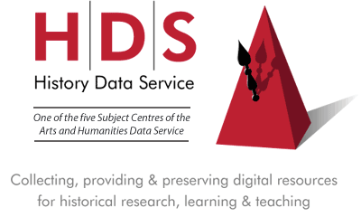

|  |
If you would like further information about the Arts and Humanities Data Service please contact the Executive team, based at King's College London. . AHDS Homepage Welcome to the The AHDS is a UK national service funded by the Joint Information Systems Committee and the Arts and Humanities Research Board. Our team is here to help you discover, create and preserve digital collections in all areas of the arts and humanities. On this site you are able to find out about the work of the AHDS, how to participate in our training events and use our publications, keep up-to-date with Internet technologies and have options to search our many collections. |